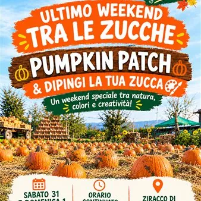

da sab 31 ott a dom 1 nov
Weekend da Degano Zucche: Pumpkin patch & dipingi la tua zucca
ULTIMISSIMO WEEKEND TRA LE ZUCCHE DA DEGANO ZUCCHE! Non hai ancora fatto un giro nel giardino di Degano Zucche? Oppure vuoi tornare un’ultima volta? Questo è il momento giusto! Sabato 31 ottobre e domenica 1 novembre Degano Zucche ti aspetta per un ultimo weekend tutto da vivere…
 Indicazioni
Indicazioni
- Costi e prenotazioni
- Costo non indicato · Prenotazione non indicata
- Programma
- Programma da verificare. Apri la fonte ufficiale per orari e possibili aggiornamenti.
- In caso di maltempo
- Nessuna indicazione specifica pubblicata.
- Note
- Acquisito automaticamente dalla fonte.
L’EVENTO
Descrizione completa
ULTIMISSIMO WEEKEND TRA LE ZUCCHE DA DEGANO ZUCCHE! Non hai ancora fatto un giro nel giardino di Degano Zucche? Oppure vuoi tornare un’ultima volta? Questo è il momento giusto! Sabato 31 ottobre e domenica 1 novembre Degano Zucche ti aspetta per un ultimo weekend tutto da vivere nel suo giardino, tra migliaia di zucche, colori e divertimento!
COSA TI ASPETTA? PUMPKIN PATCH – passeggia tra le zucche e scopri gli allestimenti autunnali e gli angoli perfetti per le tue foto! DIPINGI LA TUA ZUCCA – spazio alla fantasia dei bambini! Scegli la tua zucca, a partire da appena 1 € per le più piccole , e decorala con colori, pennelli e pennarelli messi a disposizione da Degano Zucche. MIGLIAIA DI ZUCCHE IN VENDITA – ornamentali, da intaglio per Halloween e da mangiare. Oltre 150 varietà ornamentali, con tantissime forme, colori e dimensioni tra cui scegliere! Le zucche sono coltivate direttamente da Degano Zucche, a meno di 1,5 km dall’azienda. SABATO 31 OTTOBRE E DOMENICA 1 NOVEMBRE
Dalle 9:00 alle 17:30 , con orario continuato
INGRESSO GRATUITO
Nessuna prenotazione necessaria
Puoi arrivare quando vuoi e scegliere personalmente le tue zucche! Info: tel. 339 7850377 Non lasciarti sfuggire l’ultimo weekend della stagione! Porta la famiglia, goditi i colori dell’autunno e vieni a scegliere le tue zucche preferite! DEGANO ZUCCHE TI ASPETTA!
IL PROGRAMMA
Programma e orari
Appuntamenti raccolti dalle fonti elencate. Dove manca un orario, non è ancora disponibile in questa scheda.
Programma pubblicato
- 9:00 alle 17:30
INFORMAZIONI UTILI
Prima di partire
- Controllare la fonte prima di partire.
ORGANIZZAZIONE